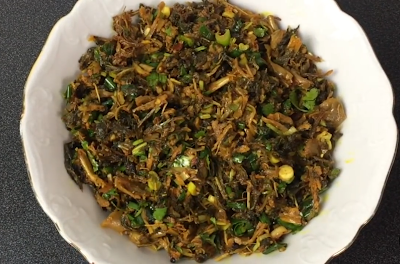

Gundruk ko Achar (Fermented Vegetable Pickle)

Description:
Gundruk ko Achar is a traditional Nepali fermented vegetable pickle made
primarily from fermented leafy greens. It's tangy, spicy, and full of flavor.
Ingredients:
- 1 cup fermented gundruk (fermented leafy greens)
- 1 onion, finely chopped
- 2 tomatoes, chopped
- 2-3 green chilies, chopped
- 2 cloves garlic, minced
- 1-inch piece of ginger, minced
- 1 tablespoon mustard oil
- 1 teaspoon turmeric powder
- 1 teaspoon cumin seeds
- Salt to taste
Steps:
- Heat mustard oil in a pan and add cumin seeds. Let them splutter.
-
Add chopped onion, garlic, ginger, and green chilies. Sauté until onions
turn translucent.
-
Add chopped tomatoes, turmeric powder, and salt. Cook until tomatoes are
soft.
-
Add fermented gundruk to the pan and mix well. Cook for a few minutes.
- Remove from heat and let it cool.
- Serve as a side dish with rice or roti.